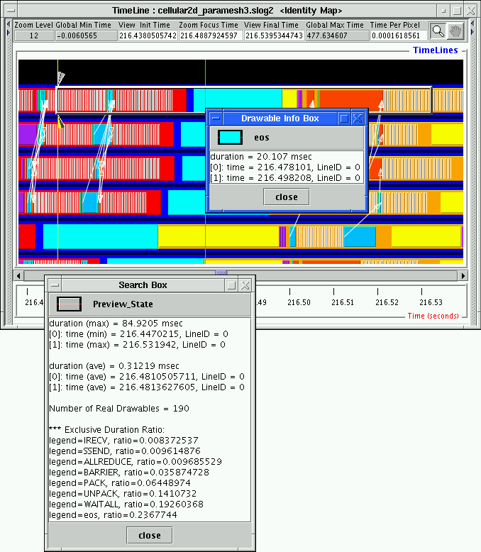

The Level-of-detail support provided in SLOG-2 and Jumpshot-4 tends to help locate states which are either longer in time or occur very frequently. States that are short and occur rarely in a big logfile are very difficult to locate without any special tool. In Jumpshot-4, a search and scan facility is provided to facilitate this goal. There are 3 search criteria: search time, searchable timeline IDs and searchable categories.

|
After setting any needed search criteria, the search operation can be carried out by pressing either the SearchForeward or SearchBackward buttons shown in Table 3.12. As shown in Figure 4.1, the search facility returns a searched state which is marked by a transparent 4.1box with a 3D raised border and whose starttime is marked by a yellow search cursor, an upper and a lower 3D arrowheads. The upper 3D arrow's color matches that of the returned state. In the figure, since the returned state is a preview state, so the upper 3D arrow is gray in color as it is shown in Legend window. Accompanied with the 3D raised bordered box is a popup Search Box that shows the detailed of the preview state like the Drawable Info Box in Figure 3.16. Since the search in the figure is looking for state eos, a Drawable Info Box is shown to indicate the returned 3D bordered box does contain category eos graphically. In order to locate the real state eos, a dragged zoom is performed around the 3D raised bordered box and the result is shown in Figure 4.2. In the figure, the real eos is located in the middle of the original 3D bordered box and it is pointed by the Drawable Info Box.
|

|
In general, when searching on big slog2 file, all preview categories should be set searchable, otherwise searching for real drawables may not return anything. Because at lower zoom level, there may not be any real drawables of the categories of interest, only preview drawable contains the categories of interest. Also, the search facility is carried out for the drawables that are in the physical memory. In some rare occasions, drawables in the memory may have been exhausted for searching before the end of the logfile has been reached, user may need to advance the search by scroll forward or backward to read in more drawables and to restart the search again. For a very big logfile, the search process of a real state may require repeated operations of search and dragged zoom before the real state can be found. This process will be automated in the later version of Jumpshot-4.